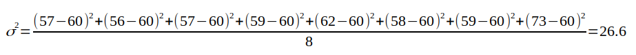

Ход исследования:
- Сбор данных (собрано 600 влоггеров с подписчиками более 1 млн.).
- Подсчет всех возможных аспектов в датах их рождения (1961-2002 годы).
- Генерация случайных дат рождений в диапазоне 1961-2002 годы (на каждый год столько дат, сколько было дней рождений влоггеров в указанном году).
- Подсчет всех возможные аспектов в сгенерированных датах рождения (1961-2002 годы).
- Поиск отклонений между случайными датами рождений и датами рождений влоггеров из выборки, подсчет вероятности выпадения каждого аспекта.
1. Сбор данных
В ходе сбора статистики выяснилось, что влоггеров миллионников огромное множество, в выборку попала лишь малая часть: США, Россия, Венесуэла, Испания, Великобритания.
По каждому знаку было добавлено по 50 влоггеров имеющих более 1 млн. подписчиков.

2-4. Подсчет аспектов / генерация случайных дат рождений
здесь таблица
5. Поиск отклонений
Использовались следующие методы:
- Отклонение от среднего значения
- Расчет вероятности
Отклонение от среднего значения
| Аспект | Значение | Шум1 | Шум2 | Шум3 | Шум4 | Шум5 | Шум6 | Шум7 | Шум8 | Шум макс. | Шум мин. | Шум средн. | Сигнал |
| Квадратура Марс-Плутон | 83 | 57 | 56 | 57 | 59 | 62 | 58 | 59 | 73 | 73 | 56 | 60 | 10 |
Комментарий к таблице:
- Значение - количество аспектов в датах рождения влоггеров
- (Шум1 - Шум8) - количество аспектов в случайно сгенерированных датах рождения (8 выборок по 600 дат)
- Шум макс. - максимальное значение
- Шум мин. - минимальное значение
- Шум средн. - среднее арифметическое (Шум1-Шум8)
- Сигнал - разница между колонкой Значение и колонкой Шум макс. (если Значение превышает максимальное) или Шум мин. (Значение меньше минимального)
Расчет вероятности
Расчет вероятности осуществляется стандартными методами для нормального распределения.
Для нашего примера из таблицы:
имеем величины: 57,56,57,59,62,58,59,73
вычисляем среднее значение:

вычисляем среднее арифметическое квадратов отклонений (дисперсию):

берем корень и получаем стандартное отклонение (сигма):

теперь мы можем посчитать вероятность получения указанного количества аспектов в выборке влоггеров по формуле:

Например, какая вероятность, что искомое значение (сумма аспектов "Квадратура Марс-Плутон (угловое расстояние между Марсом и Плутоном 90 градусов)" в датах рождения 600 влоггеров) будет находиться в диапазоне от 82 до 84?
Подставляем в формулу значения: x1=82, x2=84, σ=5, α=60, получаем:

 (значение Ф(4.8) округляем до Ф(5.0), значение Ф(4.4) округляем до Ф(4.0), далее по таблице значений интегральной функции Лапласа ищем искомые величины).
(значение Ф(4.8) округляем до Ф(5.0), значение Ф(4.4) округляем до Ф(4.0), далее по таблице значений интегральной функции Лапласа ищем искомые величины).
Итоговая вероятность получилась равной 0,000029 или 1 / 34482 !
Процесс вычисления вероятности можно автоматизировать с помощью простейшей программы на языке Python:
# Подключаем библиотеку SciPy
from scipy import stats
# Задаем параметры: loc=60 - среднее значение, scale=5 - стандартное отклонение (сигма)
calc = stats.norm(loc=60, scale=5)
# Устанавливаем значение для которого ищется вероятность и выводим результат
print(calc.pdf(83))
Для более равномерного распределения случайных дат рождений использовался подсчет количества аспектов "Квадратура Марс-Плутон (угловое расстояние между Марсом и Плутоном 90 градусов)" не в 8 случайных выборках по 600 дат, а в 1000:
 (на графике нормальное распределение (колоколообразная кривая с пиком в центре, распределение Гаусса-Лапласа) сумм аспектов в 1000 выборок по 600 случайных дат рождений, красная пунктирная линия - количество аспектов "Квадратура Марс-Плутон (угловое расстояние между Марсом и Плутоном 90 градусов)" в датах рождения 600 исследуемых влоггеров.)
(на графике нормальное распределение (колоколообразная кривая с пиком в центре, распределение Гаусса-Лапласа) сумм аспектов в 1000 выборок по 600 случайных дат рождений, красная пунктирная линия - количество аспектов "Квадратура Марс-Плутон (угловое расстояние между Марсом и Плутоном 90 градусов)" в датах рождения 600 исследуемых влоггеров.)
Что показывает этот график?
На графике отображено насколько маловероятно получить значение 83 случайно генерируя даты рождений. (число лежит практически за пределами графика - более 4-х стандартных отклонений (сигм)).
Для примера как выглядит величина, которая не маловероятна -"Тригон Меркурий-Марс" (угловое расстояние между Меркурием и Марсом 120 градусов):

Вероятность 0.06 или 1 / 15
Можно подумать, что это из за того, что Меркурий -быстрая планета и это влияет на частоту выпадания аспекта, но взглянем на аспект "Секстиль Меркурий-Венера" (угловое расстояние между Меркурием и Венерой 60 градусов):

(Вероятность 0.00248 или 1 / 402)
Варианты обьяснения полученных аномалий:
Возраст влоггеров миллионников:

Разберем более подробней на примере аспекта "Квадратура Марс-Плутон", за счет чего произошло отклонение.
83 человека из 600 имеют указаный аспект:

Из них 39 человек (1994-1996) родились в период 1994-2000, когда данный аспект встречался в 2-3 раза чаще чем обычно (52-82 дня в году, вместо 22-30 в другие годы):
 Это привело к тому, что данный аспект встречается у влоггеров из выборки аномально часто (случайная генерация дат рождений не дала схожей картины).
Это привело к тому, что данный аспект встречается у влоггеров из выборки аномально часто (случайная генерация дат рождений не дала схожей картины).
Астрологическое обьяснение:
Влоггеры часто рождались в период времени, когда наблюдалась квадратура Марса к Плутону (во внимание не берется ни в каких знаках находились указанные планеты, ни возможное влияние целого комплекса аспектов или других астрологических критериев).
Не астрологическое обьяснение:
- Эффект возраста влоггера. Большинство влоггеров имеют такой возраст, который, в данный период времени, попадает на такой момент времени, при котором "Квадратура Марс-Плутон" встречается в два раза чаще обычного. Проверкой данного предположения может быть повторное исследование, проведенное через несколько десятков лет.
- Эффект выборки. Мало данных, выборка была нерепрезентативна или сфабрикована, некорректная генерация случайных дат рождений и т. п. Проверкой данного предположения может быть независимое исследование.
Итоговая таблица по аномалиям:
Max - аспект встречается аномально часто.
Min - аспект встречается аномально редко.
вероятность 1/1000 и менее (за пределами нормального распределения):
Квадратура Марс-Плутон - Max
Оппозиция Солнце-Уран - Min
Оппозиция Солнце-Сатурн - Min
Тригон Марс-Сатурн - Min
Секстиль Меркурий-Венера - Max
Секстиль Марс-Юпитер - Min
Секстиль Венера-Уран - Max
Квадратура Венера-Марс - Min
Соединение Меркурий-Нептун - Max
вероятность менее 1/1000 но более 1/200:
Секстиль Меркурий-Марс - Max
Секстиль Солнце-Сатурн - Max
Оппозиция Солнце-Юпитер - Max
Секстиль Юпитер-Уран - Max
Квадратура Луна-Венера - Max
Секстиль Сатурн-Нептун -Min
Секстиль Уран-Плутон - Max
Оппозиция Меркурий-Сатурн - Min
Секстиль Нептун-Плутон -Min
Благодарю всех, кто принял участие в эксперименте и присылал ссылки на каналы влоггеров.